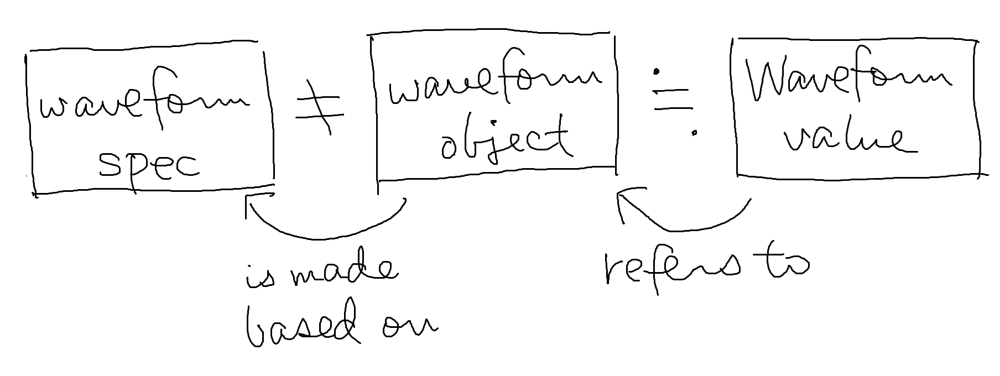

波形を参照する型です。
他の型とは異なり、この型の値を直接表現する方法はありません。
waveform
構築文を使って波形を構築すると、その波形を参照する
Waveform
型の値が生成され、変数に割り当てられます。
waveform
文を使って
Waveform
型の値を生成する例を以下に示します：
// wav ファイルから
@waveform :piano, "/path/to/piano.wav"
// ==> piano.type() = "Waveform"
// 連想から
@waveform :vib, {
data: x[00000000000000000000 10<10>1210<1210>123210<123210>[12343210<12343210>]],
sampleRate: 60,
}
// ==> vib.type() = "Waveform"waveform
文の第 2
引数（spec）に指定するファイルパスや連想は、波形そのものでもなければ
Waveform
型の値でもないことに注意してください。
ファイルパスや連想は波形の「元データ」であり、波形はそれらを元に別の領域に構築されたオブジェクトであるため、両者は別のものです。
一方、Waveform 型の値は構築された波形に対する参照であるため、両者は密接に関連しています。これらは同一視して問題ありません。
